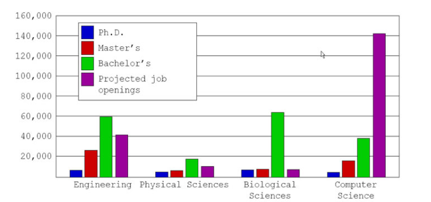

Source: DetikNews
Source: AntaraNews
Dua screenshot berita nasional di atas cukup menjelaskan dan menggambarkan masalah yang ingin kami pecahkan. Menurut para pakar teknologi di bidang industri, lulusan IT khususnya di Indonesia dinilai memiliki skill yang kurang untuk siap memasuki dunia kerja.
Perbandingan Jumlah Kelulusan Vs. Lapangan Pekerjaan
Source: cs.stanford.edu
Find the Mentor merupakan platform website mentorship. Website Find the Mentor ini menjembatani kegiatan mentoring bagi mahasiswa jurusan komputer.